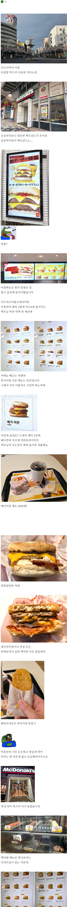
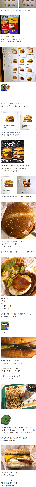

은근? 대놓고 짜댜~
양귀비씨?? 너는 딱 걸렸다
사진만 봐도 ㅈㄴ 짜네
일본 맥날은 사진 삐딱하게 찍는다더니 진짜였어
근데 일본맥날은 사이즈가 좀 작은거같던데 진짜로작나
존나 작고 맛없음
요루마쿠 시간되면 일반빅맥을 안판다 …
사무라이 더블비프 저게 진짜 존맛인데. 쉑쉑 느낌이면서도 아시아인에게도 호불호없는 버전임
짜게먹는거 좋아하는 사람들은 일본 천국임
KFC도 맥날도 걍 모든게 짬
밥먹고 물 존나 마심
일본은 한정판으로 보름달 버거 팔던데
우리나라 행운버거같은거
내가 일본라멘 별로 안좋아하는 이유중 하나가 진짜 존나짜서.
하지만 우동 차원이 달라
일본맥날은 케챱 필요하면 주문픽업할때 달라해야 줌
워낙에 안먹는 사람도 있고 소금맛으로 먹는 사람들 많음
매번 달라하는게 귀찮을지 모르겠지만 낭비는 줄일수 있다고봄
상당히 인슐린 땡기네
태국 와있는데 사무라이 버거인가 저거 있더라
나도 먹어볼까
일본살때 메가머핀 진짜 존나 좋아했는데 한국에 왜 안들어오는지 모르겟슴
대충 뭐가 달라 병
사무맥 좋아함 맛있어
오랜만에 저 맥모닝 특유의 텁텁한 빵 좀 땡기네
소시지 머핀 두개 겹친거같은디.. 든든하긴하것다 맥머핀 쥐콩만한디 은근 든든해
아침부터 메가머핀이면 나트륨도 메가로 들어오겠다
일본살면서 먹을거없을때 가끔 가는데 사무라이맥은 한번 먹고 다시는 못먹겠음. 저 쥬시맥은 그나마 먹을만한데 그나마 먹을만한거지 맛은 없음. 걍 상스치콤이 최고
단품하나에 6500원 ㅋㅋㅋㅋ ㅈㄴ비싸네 ㅈ도날드 단품가격이 버거킹이랑 비슷하면 누가쳐먹음
저거 사무라이더블치즈를 소스없이 주문시키고 뚜따해서 케첩달라해서 그거 뿌려먹으면 유사 더콰치맛 남
닭다리살로 리뉴얼된 치킨버거는 지금 너무 잘팔려서 물량딸려서 일시판매중지중...
가끔 생각하는건데 아침메뉴에 토마토 계란 치킨패티 소세지 들어간 쿼드머핀 나오면 좋을거같음
돼지력 높은 애들은 다들 한번씩 생각해봤을거다 아침모듬머핀
일본인들이 은근 존나 짜게 먹네